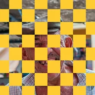

Dambord

Tekent een dambordpatroon over de ondoorzichtige delen van de laag, of ponst de vakjes eruit.
Instellingen
| Instelling | Type | Bereik | Standaard |
|---|---|---|---|
| Verschuiving | Punt (X, Y) | -5000 px tot 5000 px | 0 px, 0 px |
| Aantal | Getal | 0.5 tot 200 | 10 |
| Uitrekken | Punt (X, Y) | 0.01 tot 10 | 1, 1 |
| Kleur | Kleur | – | #2D1EF6 |
| Uitsparen | Aan of uit | – | Uit |
| Hoek | Hoek | -3600° tot 3600° | 0° |
| Schermruimte | Aan of uit | – | Uit |